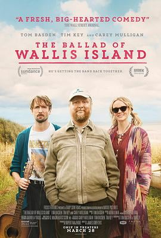

7.1
瓦利斯岛的歌谣
The Ballad of Wallis Island
2025
英国
评分 7.1
导演:
詹姆斯·格里菲斯
演员:
蒂姆·凯 / 汤姆·巴斯登 / 茜安·克利福德 / 凯瑞·穆里根 / 阿克姆吉·恩迪福尼恩 / Steve Marsh / Luka Downie
类型:
剧情,喜剧,音乐
剧情简介
在英国西海岸一座偏僻的岛屿上，彩票两次中大奖的查尔斯（蒂姆·凯 饰）独自住在那里，整日沉浸于他最爱的民谣组合“麦葛维－莫蒂默”的音乐之中。他突发奇想——邀请组合成员赫布（汤姆·巴斯登 饰）和前搭档兼旧爱奈尔（凯瑞·穆里根 饰）到岛上，为他举办一场私密演出。赫布早已离开组合，转向流行音乐领域，事业乏善可陈；奈尔则退隐乡间，在美国俄勒冈静静卖自制辣酱、尝试拾起生活碎片。他们接下邀请，却不知演出仅为一人——查尔斯。岛上的小屋、海边的木平台、夜晚飞舞的天灯与海浪低语，共同构成一幅孤寂而温暖的画面。当旧日裂痕在排练中复苏，赫布与奈尔之间的尴尬、对音乐的热情与遗憾、查尔斯对妻子的思念及对音乐的狂热同时交织。岛上的店主阿曼达（茜安·克利福德 饰）默默观望这一切，而查尔斯在他的世界里一次次问自己：音乐，是回忆？还是救赎？影片在风景中铺陈人物，在幽默中透出伤感。音乐不是背景，而是驱动力；旧情结、艺术困境、孤独心声都在岛屿静谧夜色中回响。画面里，主角们在海边散步、在排练室碰撞旧曲、在火堆旁放飞愿望，情感在细节里积蓄。你能看到那把旧吉他被尘封、那张破裂乐团合影被拿出更换、那一盏盏天灯缓缓升起带走谁的遗憾。这是一部关于音乐与人、旧爱与新生、孤岛与梦想交织的温柔电影。情节虽静，却带着深沉的波动。